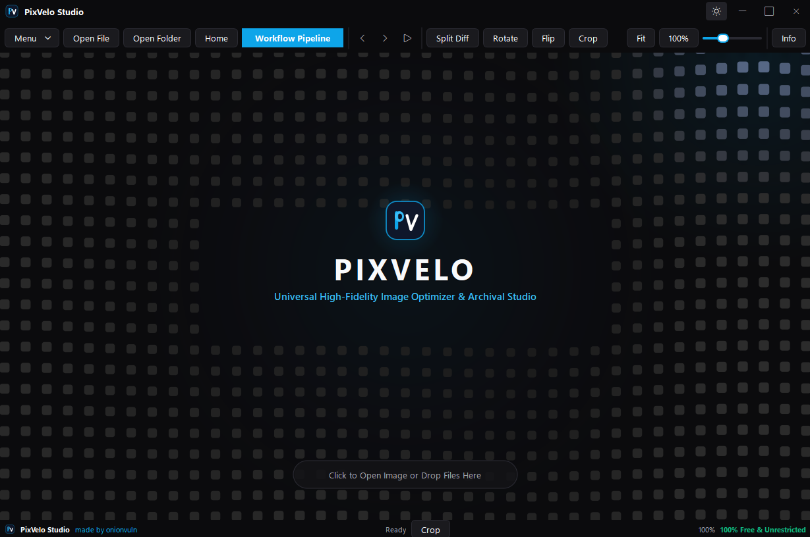

FEATURED / 001 PUBLIC REPOSITORY
PixVeloSTUDIO
Image workflows.
Without the friction.
PixVelo is a desktop image-processing and optimization toolkit for compression, conversion, batch processing, cropping, previewing and file workflows.
Format supportBatch processingBefore / after previewPortable build
Feature descriptions are based on the public PixVelo repository. Check the source and release notes for current compatibility.

YOUR PIXVELO SCREENSHOTAdd your real screenshot at
assets/pixvelo-main.pngPRODUCT CAPTURE / 01ORIGINAL APP SCREENSHOT